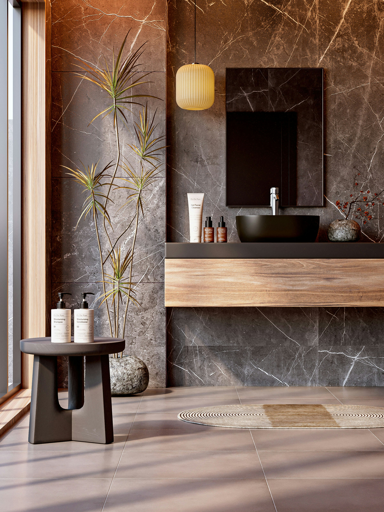
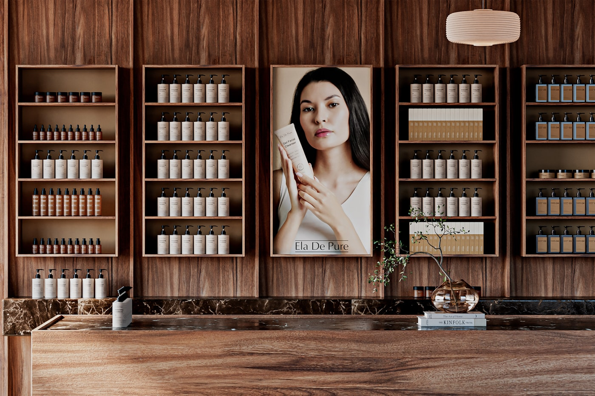
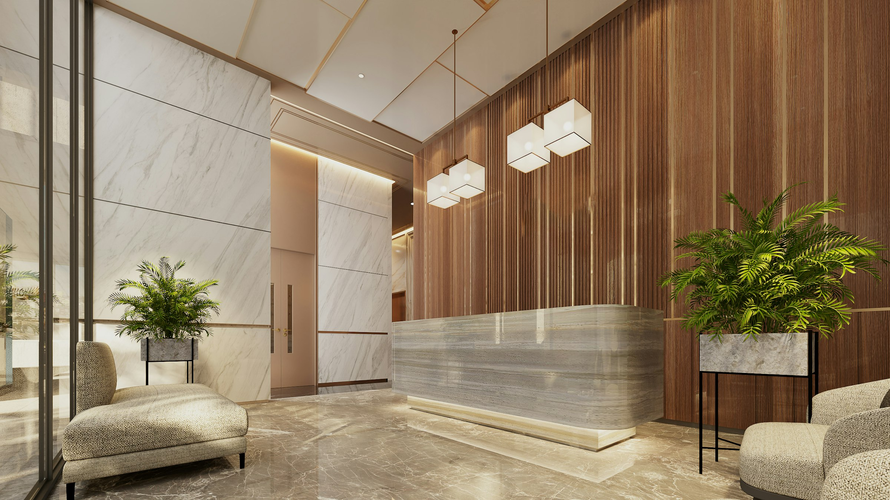

Cabinets & Clinique
Le choix d'un cadre de soin agréé et d'un chirurgien expérimenté conditionne autant la sécurité que la qualité du résultat. Le Dr Espinoza reçoit ses patients dans deux cabinets de consultation, à Genève et à Nyon, et réalise ses interventions chirurgicales à la Leman Aesthetic Clinic, dans un environnement médical complet.
« La sécurité du patient commence par le choix d'un cadre médical agréé et d'une équipe expérimentée, du premier échange jusqu'au suivi post-opératoire. »— Dr Daniel Espinoza

Cabinet de Genève
Un espace de consultation pensé pour la discrétion et le confort, au cœur de Genève.
022 346 59 56
Du lundi au vendredi, sur rendez-vous

Cabinet de Nyon
Un second cabinet sur la Côte, pour un accompagnement de proximité entre Genève et Lausanne.
022 346 59 56
Sur rendez-vous

Clinique chirurgicale
Les interventions chirurgicales sont réalisées à la Leman Aesthetic Clinic, un établissement agréé offrant un encadrement médical complet, du bloc opératoire jusqu'au suivi post-opératoire.